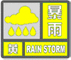

暴雨灾害防御指引
一、暴雨蓝色预警信号发布后防御指引
（一）暴雨蓝色预警信号的图标及含义
暴雨蓝色预警信号 ，为“戒备级”信号，其含义为： 标准：预计未来可能出现下列条件之一或实况已达到下列条件之一并可能持续：
（1）1小时降雨量达20毫米以上；
（2）3小时降雨量达30毫米以上；
（3）12小时降雨量达50毫米以上。
（二）社会公众防御指引
1.全市进入暴雨戒备状态，市民注意通过电视、广播、互联网、显示屏、大喇叭、热线电话等多种渠道收听、收看、查询暴雨最新动态。
2.学校工作人员应关注暴雨预警信息，以便天气突然恶化时及时应变。小学和幼儿园学生上、下学应由成人带领，采取适当措施，保证学生和幼儿的安全；
3.驾驶人员应当注意道路积水和交通阻塞路段，尽量绕行，确保行车安全；
4.行人及户外作业人员不要在高楼或大型广告牌下躲雨、停留，以免被坠落物砸伤；处于低洼易涝区、危房、边坡等可能发生危险区域的人员，应关注降雨趋势，并采取必要的安全措施或到安全场所暂避。
5.地铁、地下商场、地下车库、地下通道、地下室等地下设施的管理单位应提前疏通排水设施，做好必要的防范措施。
6.家庭和个人应检查电路、炉火等设施是否安全，检查漏雨渗水处，提前做好防范准备。 特别提示：暴雨预警信号取消后，河道周边、危险边坡、山体滑坡等次生灾害易发区域的人员仍应注意加强安全防范。
（三）有关部门防御建议
1. 地方各级人民政府、有关部门和单位按照职责做好防暴雨准备工作，检查城市、农田以及其它重要设施排水系统，做好排涝准备。
二、暴雨黄色预警信号发布后防御指引
（一）暴雨黄色预警信号的图标及含义 暴雨黄色预警信号 ，为“防御级”信号，其含义为： 预计未来可能出现下列条件之一或实况已达到下列条件之一并可能持续：
（1）1小时降雨量达30毫米以上；
（2）6小时降雨量达50毫米以上。
（二）社会公众防御指引
1.全市进入暴雨防御状态，市民注意通过电视、广播、互联网、显示屏、大喇叭、热线电话等多种渠道主动收听、收看、查询暴雨及有可能发生的次生灾害最新动态。
2.在校学生（含校车上、寄宿）应服从学校安排，学校暂停户外教学活动等，保障在校学生的安全；上学、放学途中的学生应就近到安全场所暂避。中小学、幼儿园可提前或推迟上下学时间，采取防护措施，确保学生、幼儿上下学及在校安全；
3.驾驶人员要及时了解交通信息和前方路况，遇到路面或立交桥下积水过深，应绕行，避免穿越水浸道路强行通过。避免将车辆停放在低洼易涝等危险区域，当车辆在积水处抛锚，车内人员或周边知情人员应立即拨打相关救助电话。
4.户外大型文体活动暂停，旅游景点暂停售票，并对滞留人员采取必要的防护措施。行人应避开桥下（尤其是下凹式立交桥下）、涵洞等低洼地区，切勿在高楼、广告牌下躲雨或停留；在积水中行走时，要注意观察路面情况。
5.户外作业人员应密切关注暴雨和交通信息，远离低洼易涝区、危房、边坡、简易工棚、挡土墙、河道、水库等可能发生危险的区域；远离架空线路、杆塔和变压器等高压电力设备，避免穿越水浸区域、接触裸露电线，导致触电;应暂停工作，并到安全场所暂避。
6.室内人员应及时采取防御措施，关闭和紧固门窗，防止雨水侵入室内。检查电路、炉火、煤气阀等设施是否安全，切断低洼地带有危险的室外电源，暂停在空旷地方的户外作业，危险地带人员和危房居民转移到安全场所避雨。
7.地铁、地下商场、地下车库、地下通道、地下室等地下设施的管理单位应做好必要的防范措施。
8.机场、车站、地铁站等交通枢纽可能受到影响时，前往时请先咨询相关信息。 特别提示：暴雨预警信号取消后，河道周边和危险边坡等次生灾害易发区域的人员仍应注意加强安全防范。
（三）有关部门防御建议
1.地方各级人民政府、有关部门和单位按照职责做好防暴雨工作，检查城市、农田、立交桥等重点人群聚集地的排水系统，及时清理排水管道，做好排涝工作。
2.交通管理部门应根据路况，加密交通信息提示，在强降雨路段采取交通管制措施，在积水路段实行交通引导，禁止行人和机动车辆穿行积水路段。
3.水库排洪河周边的人员应密切关注水库排洪预警信号，并采取必要的防范措施。检查城市、农田、鱼塘排水系统，采取必要的排涝措施。
三、暴雨橙色预警信号发布后防御指引
（一）暴雨橙色预警信号的图标及含义 暴雨橙色预警信号  ，为“紧急防御级”信号，其含义为：
（1）1小时降雨量达40毫米以上；
（2）3小时降雨量达50毫米以上。
（二）社会公众防御指引
1.全市进入暴雨紧急防御状态，市民务必通过电视、广播、互联网、显示屏、大喇叭、热线电话等多种渠道主动收听、收看、查询暴雨最新动态，避免不必要的外出活动。
2.处于危险地带的单位应当停课、停业，采取专门措施保护已到校学生、幼儿和其他上班人员的安全；中小学、幼儿园、托儿所停课。未启程上学的学生不必到校上课；上学、放学途中的学生应就近到安全场所暂避；学校应保障在校学生（含校车上、寄宿）的安全。
3.驾驶人员应暂停行驶并开启警示灯，将车停靠在地势较高处或安全位置，人员到高处躲避；当车辆在积水处抛锚或遇严重水浸等危险情况，车内人员或周边知情人员应立即拨打相关救助电话，并立即启动逃生救生措施。
4.户外大型文体活动暂停，旅游景点暂停售票，并对滞留人员采取必要的防护措施。行人应避开桥下（尤其是下凹式立交桥下）、涵洞等低洼地区，切勿在高楼、广告牌下躲雨或停留；在积水中行走时，要注意警示标志及路面排水积水情况。
5.户外人员应密切关注暴雨和交通信息，远离低洼易涝区、危房、边坡、简易工棚、挡土墙、河道、水库等可能发生危险的区域；远离架空线路、杆塔和变压器等高压电力设备，避免穿越水浸区域，接触裸露电线，导致触电；应立即切断户外电源，暂停工作，并到安全场所暂避。
6.如需出行应搭乘公共交通工具；山区人员要防范山洪，避免渡河，不要沿河床行走，注意山体滑坡、滚石、泥石流；如发现高压线铁塔倾倒、电线低垂或断折，要远离避险，不可触摸或接近。
7.室内人员应立即采取防御措施，关闭和紧固门窗，防止雨水侵入室内。有雨水漫入室内危险或已经有雨水漫入时，应立即切断电源。用人单位安排员工停工或推迟上班（抢险救灾、医疗及保障居民基本生活必需的公共交通、供水、供电、燃气供应等特殊行业除外），如果下班时预警信号仍在生效，用人单位应提供安全场所让员工暂避。
8.地铁、地下商场、地下车库、地下通道、地下室等地下设施的管理单位应做好必要的防范措施。
9.机场、车站、地铁站等交通枢纽可能受到影响，前往时请先咨询相关信息，做好取消航班、火车、地铁停改运准备。 特别提示：暴雨预警信号取消后，河道周边和危险边坡等次生灾害易发区域的人员仍应注意加强安全防范。
（三）有关部门防御建议
1.地方各级人民政府、有关部门和单位按照职责启动防暴雨应急工作，做好城区与郊县河道、道路与排水管道的清淤、疏通，注意防范山洪、滑坡、泥石流等灾害。
2.交通管理部门应当根据暴雨灾害和道路情况，分片分段强化交通管控，设立交通警示标志，疏导交通堵塞。
3.受暴雨洪涝威胁的危险地带应停止集会、停课、停业，采取专门措施保护在校学生、幼儿和上班人员的安全。
4.水库排洪河周边的人员应密切关注水库排洪预警信号，并采取必要的防范措施。
5.居委会、物业等社区负责单位可在地下车库或1层低洼地区房屋门口放置挡水板、沙袋或土坎，地下设施的地面入口要砌好沙袋，严防雨水倒灌。
6.危旧房及山洪地质灾害易发区内人员应立即转移到安全地点。做好城市、农田的排涝，注意防范可能引发的山洪、滑坡、泥石流等灾害。
四、暴雨红色预警信号发布后防御指引
（一）暴雨红色预警信号的图标及含义 暴雨红色预警信号 ，为“特别紧急防御级”信号，其含义为：
（1）1小时降雨量达60毫米以上；
（2）3小时降雨量达100毫米以上。
（二）社会公众防御指引
1.全市进入暴雨紧急防御状态，市民务必通过电视、广播、互联网、显示屏、大喇叭、热线电话等多种渠道主动注意收听、收看、查询暴雨最新动态，禁止外出。
2.停止集会，停课、停业（除特殊行业外）；中小学、幼儿园、托儿所停课。未启程上学的学生不必到校上课；上学、放学途中的学生应就近到安全场所暂避；学校应保障在校学生（含校车上、寄宿）的安全。
3.驾驶人员应暂停行驶并开启警示灯，将车停靠在地势较高处或安全位置，人员到高处躲避；当车辆在积水处抛锚或遇严重水浸等危险情况，车内人员或周边知情人员应立即拨打相关救助电话，并立即逃生救生。
4.停止一切户外活动，旅游景点暂停售票，并对滞留人员采取防护措施。行人应避开桥下（尤其是下凹式立交桥下）、涵洞等低洼地区，切勿在高楼、广告牌下躲雨或停留；在积水中行走时，要注意警示标志及路面排水积水情况。
5.如在野外，可选地势较高的民居暂避，不要在山梁或山顶上行走，以防雷击，也不要沿山谷低洼处行走，提防山洪、滑坡、泥石流。
6.户外人员应密切关注暴雨和交通信息，远离低洼易涝区、危房、边坡、简易工棚、挡土墙、河道、水库等可能发生危险的区域；远离架空线路、杆塔和变压器等高压电力设备，避免穿越水浸区域，接触裸露电线，导致触电；立即切断户外电源，暂停工作，并到安全场所暂避。
7.如需出行应搭乘公共交通工具；山区人员要防范山洪，避免渡河，不要沿河床行走，注意山体滑坡、滚石、泥石流；如发现高压线铁塔倾倒、电线低垂或断折，要远离避险，不可触摸或接近。
8.室内人员应立即关闭和紧固门窗，防止雨水侵入室内。有雨水漫入室内危险或已经有雨水漫入时，应立即切断电源。用人单位安排员工停工或推迟上班（抢险救灾、医疗及保障居民基本生活必需的公共交通、供水、供电、燃气供应等特殊行业除外），如果下班时预警信号仍在生效，用人单位应提供安全场所让员工暂避。
9.地铁、地下商场、地下车库、地下通道、地下室等地下设施的管理单位应做好必要的防范措施，防止雨水倒灌，并时立即关闭，务必采取措施保护地下设施内人员安全。
10.机场、车站、地铁站等交通枢纽可能受到影响，避免前往，并做好取消航班、火车、地铁停改运准备。
（三）有关部门防御建议
1.地方各级人民政府、有关部门和单位按照职责做好城区、郊区县及山区暴雨及其次生灾害的应急防御和抢险工作；面向社会滚动发布灾情、灾害风险和旅游风险信息。
2.交通管理部门应实施高级别交通管制，确保深积水路面、地面塌陷、洪水冲毁、高压线塔倒塌、电杆倒折、高压线垂地等危险区域有明确标识和专人值守，严禁车辆及行人进入。
3.有关单位应立即转移居住在病险水库下游、山体易滑坡地带、泥石流多发区、低洼地区、有结构安全隐患房屋等危险区域人群。
4.水库排洪河周边的人员应密切关注水库排洪预警信号，并采取防范措施。
5.居委会、物业等社区和楼宇负责单位应在地下车库、地下室或1层低洼地区房屋门口放置挡水板、沙袋或土坎，地下设施的地面入口要砌好沙袋，严防雨水倒灌。
6.危旧房及山洪地质灾害易发区内人员应立即转移到安全地点。做好城市、农田的排涝，立即采取措施防范可能引发的山洪、滑坡、泥石流等灾害。
五、当市气象台连续发布或升级暴雨蓝色、黄色、橙色或红色预警信号预发布信息时，请分别参照暴雨蓝色、黄色、橙色或红色预警信号发布后的防御指引，提前做好防御准备。
六、若暴雨预警信号与其他预警信号同时生效，请参照相应的暴雨等预警信号发布后的防御指引，做好防御准备。
七、暴雨影响期间，公众应关注暴雨及其他相关预警信息，服从政府及相关部门在灾害防御、抢险救灾指挥和部署，当发现险情、灾情时应及时向有关部门通报，并相互转告暴雨及其他相关预警信息。